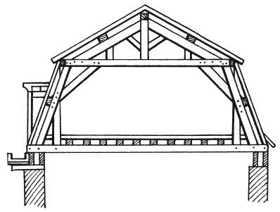
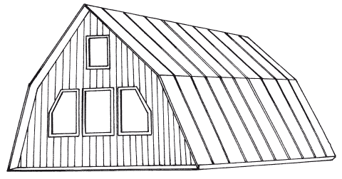
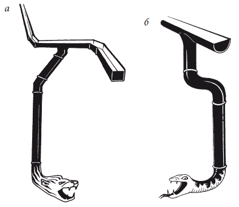

Мансарды.

Если площадь дома или коттеджа по каким-то причинам ограничена, то крыши выполняют с мансардой, то есть в чердачном пространстве устраивают не очень большие комнаты с окнами различной формы. В этих вариантах сооружение крыши и кровли усложняется, но зато получают дополнительные чердачные помещения, которые можно использовать для летнего отдыха и других целей.
Мансарда – весьма примечательная часть любого дома. Главное достоинство помещения, устроенного на чердаке под высокой крышей, заключается в том, что оно дает дополнительную полезную площадь, а близость к природе и открытость воздуху создают необычную по своей комфортности атмосферу.
Мансарда – это, как правило, жилое помещение на чердаке здания, каждый скат крыши которого состоит из двух частей: верхняя должна быть пологой, а нижняя – крутой. Родина мансард – Франция. Впервые идея использовать чердачное пространство для жилья пришла Франсуа Мансару, представителю классического направления в архитектуре середины XVII в. С тех пор мансарды, названные так в честь архитектора, стали широко использовать в архитектуре не только городских зданий, но и сельских домов.
Мансардные крыши обогащают объем здания, вносят определенную поэтичность в архитектурный облик дома. В мансардных крышах много воздуха, нет унылого и строгого в своей геометрии кубического объема, присущего современному жилью (рис. 23).

Согласно СНиП 2.08.01–89, мансардным может считаться этаж в чердачном пространстве дома, фасад которого полностью или частично образован поверхностью наклонной или ломаной крыши. При этом линия пересечения плоскости крыши и фасада должна быть на высоте не более 1,5 м от уровня пола мансардного этажа. Чтобы помещение не походило на эксплуатируемый чердак, минимальная высота одной из вертикальных стен должна быть не ниже 1,4 м. В этом случае владелец помещения может сидеть около нее на стуле.
Мансарды могут быть различного типа. Выбирая утеплитель, вы регулируете сезонность использования второго этажа. Обычно вопрос о создании жилого помещения на чердачном этаже ставится перед началом строительства, что снижает итоговые затраты на обустройство верхнего этажа, в том числе и на его утепление. Но благодаря новым технологиям современной стройиндустрии, не является проблемой и утепление после возведения дома «под крышу» (без отделки). Вариант «в два этапа» даже считается более предпочтительным, ведь он позволяет дать фундаменту и стенам пройти этап «усадки», после которого и делается финишная отделка.
Во многом из-за этого плоские крыши в частных домах россиян не пользуются особой популярностью.
Современные мансарды отличаются изяществом исполнения. Многие домовладельцы при выборе проекта обращают внимание на внешний вид своего будущего дома и хотят, чтобы он подчеркнул индивидуальность своего хозяина и выделялся на фоне остальных домов в округе. Архитекторы активно используют свою фантазию и подчас создают настоящие шедевры. Мы не будем рассматривать слишком дорогие проекты мансард, а возьмем слегка видоизмененную мансарду, обустроенную на основе типовой. Второй этаж дома может быть выполнен в виде мансарды, плавно переходящей в четырехскатную крышу, венчающую строение. Здесь у архитектора, благодаря отвлечению от типовой конструкции, есть возможность придать дому некоторую выразительность и оригинальность. При этом сложность конструкции и, соответственно, ее конечная стоимость, относительно типового проекта не сильно увеличиваются.
Еще один проект дома с мансардой под крышей – когда архитектор берет за основу достаточно популярную полувальмовую крышу и переоборудует чердачное помещение в жилую мансарду. Для этого он усложняет форму крыши, а за счет дополнительных боковых окон обеспечивает весь второй этаж очень хорошим естественным освещением. На втором этаже можно разместить как детскую комнату, так и кабинет главы семьи. Именно прекрасное дневное освещение позволит детям отлично чувствовать себя в этом помещении.
Если ваша крыша имеет высоту порядка 5 м, то можно предложить обустроить подкрышное пространство двухуровневой мансардой (рис. 24). Полезная площадь, полученная в этом случае, позволит разместить на первом мансардном этаже прекрасную комнату отдыха или рабочую комнату. Если у вас есть дети, то они отлично обживут большую игровую комнату. Верхний же этаж мансарды можно превратить в уютную спаленку, которая будет изолирована от остальных помещений. В ней вас никто не потревожит, ведь доступ к ней вы можете сделать при помощи складной поднимающей чердачной лестницы.

Водоотводы
Для удаления с крыш дождевой и талой воды устраивают наружные водосточные трубы. По ним растаявший снег и вода сбрасываются в определенное место, а уже оттуда по водоотводным канавам уходят с участка в специальные уличные стоки.
При возведении стропильных крыш очень важно правильно подвести систему водоотвода, поскольку потоки дождевой и талой воды портят отделку фасадов, ухудшают состояние наружных стен, разрушают отмостку и даже могут вызвать частичное повреждение фундамента дома.
Различают 2 вида отвода талой или дождевой воды с кровель чердачных крыш – организованный и неорганизованный. При неорганизованном стоке вода стекает с кровли на всем ее протяжении. Подобный водоотвод допускается только в малоэтажных домах при условии, что стекающая вода не попадает на тротуар. При организованном отводе вода, которая стекает с кровли, по специальным желобам отводится к наружным водосточным трубам. Существуют три вида желобов: настенные, подвесные и выносные.
На сегодняшний день выбрать соответствующий водоотводный желоб для своего дома не составляет особого труда. Рынок строительных материалов предлагает достаточно широкий их выбор, несмотря на то, что существует только две формы желобов: прямоугольная и полукруглая (рис. 25).

Бесспорно, основной функцией водосточной системы является отвод воды. Но талантливый архитектор всегда старается вписать водоотводную систему в общий вид дома максимально органично. Ведь водосточная система должна не только соответствовать общему направлению внешнего дизайна дома, но и по возможности подчеркивать своими формами единый стиль переходов от крыши к стенам. Для домов с простыми, плоскими крышами нередко используются внутренние водоотводы, встроенные в стены, с выводом воронки на крышу и обязательным наклоном крыши для стока талой и дождевой воды в воронку.
Но не всегда на прямой крыше используются встроенные водоотводы. Существует внешнее устройство водостока, в котором сбор воды осуществляется встроенной воронкой с последующим выводом наружу.
На дизайн водостока стоит обратить особое внимание. Ведь этот элемент может подчеркнуть оригинальность вашего дома и придать изысканность его общему стилю.
Прекрасным инструментом оформления дома может послужить дизайнеру горловина водоотвода и сливное отверстие.
Водосточную трубу изготавливают из кровельной стали толщиной 0,5–0,6 мм. Она состоит из верхней воронки и трубы диаметром 105, 140 и 215 мм. Труба составляется из отдельных звеньев и имеет перегибы внизу у отмета и вверху у воронки. Диаметр верхней части воронки должен в 2–2,5 раза превышать диаметр самой трубы. Крепление водосточной трубы к стене делают с помощью ухватов, которые прочно заделывают в стену и располагают на высоте через 1–1,5 м.
Если водостоки внутренние, то на крыше устанавливают специальные водоприемные воронки, которые соединяются с чугунными стояками. Они проходят внутри здания и отводят воду в подземную ливневую сеть или канализацию. Чугунная воронка внутреннего водостока состоит из чаши, колпака или крыши, прижимного кольца и закрепляющего устройства. Водоприемные воронки устанавливают в ендовах. Трубы, расположенные внутри здания, отводят дождевую и талую воду в ливневую канализацию.
Расстояние между воронками зависит от длины ската. На одну воронку должно приходиться не боле 800–1200 м площади кровли. Необходимые продольные уклоны для стока воды к воронкам в ендовах создают за счет переменной толщины укладываемого в них слоя легкого бетона. Продольный уклон должен быть не менее 1°. Водоприемные воронки внутренних водостоков делают из чугуна. Воронка состоит из трех основных частей: патрубка, входящего в верхний конец и заделанного в конструкцию покрытия, корпуса с отверстиями для приема стекающей с кровли воды и крышки или колпака с отверстиями. Каждую воронку присоединяют к стояку (трубе) диаметром не менее 100 мм.
В местах установки воронки в покрытии предусматривают отверстие размером 400 ? 400 мм, в которое вставляют чашеобразный чугунный поддон с отверстием для патрубка воронки. При установке патрубка в поддон участки между его стенками и воронкой заливают горячей битумной мастикой.
Внутреннюю поверхность поддона оклеивают стеклотканью или мешковиной, пропитанной битумом, и заводят в нее края кровли. Корпус воронки устанавливают в патрубке поверх кровли и в нижней части также заливают битумом.
Качественные системы водосточных желобов и труб, предназначенные для отвода дождевой воды с крыши и от стен зданий, производят в Германии. Стандартные размеры желоба: диаметр – 150 мм, длина – 4 и 2 м. Длина трубы при внутреннем диаметре 100 мм может достигать 50 см, 1,2 м и 4 м.
Сырьевой состав достаточно разнообразен и состоит из ПВХ, ПММА, пигментов (в массе). Выдерживает температурный режим от –40 °C до +80 °C. Площадь водосбора – 170 м . Гарантия – 10 лет.
Желоба, водосточные трубы и доборные элементы (в общей сложности 31 наименование) изготовляют из окрашенного в массе ПВХ. Выпускают систему четырех цветов: белого, серого, коричневого и под медь.
Немецкие системы водосточных желобов и труб соответствуют всем требованиям, которые предъявляют к современной системе водослива. Они не нуждаются в дополнительном обслуживании, устойчивы к любым погодным условиям и имеют достаточно продолжительный срок эксплуатации. Монтаж прост и по предлагаемой инструкции может быть выполнен даже непрофессионалом.
Стальные «флейты водосточных труб»
Не так давно водосточные системы изготавливали только из металла, и доминирующее положение принадлежало оцинкованной стали. Медь и цинк из-за их относительно высокой стоимости использовали крайне редко. Для склонных к коррозии водостоков из «оцинковки» характерен ограниченный срок службы. Кроме того, внешний вид водосточной «классики» привлекательным назвать трудно.
В настоящее время, благодаря современным технологиям, недостатки оцинковки успешно преодолены. Сегодня на строительном рынке представлен широкий ассортимент водосточных систем, выполненных из оцинкованной стали толщиной 0,6 мм с защитно-декоративным полимерным покрытием из слоя пластизола (100 мкм) или пурала (50 мкм). Подобная продукция отличается надежностью, долговечностью, простотой сборки, а также разнообразием цветовых решений.
Стабильным спросом стали пользоваться медные и цинковые водостоки промышленного изготовления. Благородная и красивая медная или цинковая «водосточка» способна верой и правдой служить более 100 лет. К тому же случайные повреждения легко выправляются, а места протечек запаиваются без особых проблем.
Перед установкой в доме водосточной системы определяются с тем, каким водосток будет: внутренним или наружным. Первый вариант годится для сурового климата, чтобы вода не успевала замерзнуть до того, как сольется на землю. Такой водосток следует устанавливать поодаль от наружных стен. Но самыми распространенными вариантами являются традиционный неорганизованный водосток, реализующийся по скату крыши (вынос крыши за периметр дома не менее 60 см, иначе вода будет попадать на стены), либо наружная система организованного водостока.
При наличии необходимых навыков вполне можно самостоятельно изготовить водосточную систему. Для трубы потребуются стальные листы толщиной примерно 0,8 мм. Сначала на каждом из них загибают продольные кромки, чтобы можно было соединить несколько звеньев, из которых обычно труба и состоит, далее, используя вальцовку, катают листы, чтобы получить цилиндр или конус (для ручной выкатки понадобятся труба, брусок, рельс). После того, как листы загнуты, их края соединяют фальцевым швом. Одну из сторон получившейся трубы делают уже (примерно на 6 мм), чтобы она могла вставляться в другую.
Воронку для приема воды, состоящую из ободка, конуса и стакана, изготовить сложнее, ведь необходимо добиться того, чтобы диаметр ободка совпадал с диаметром той стороны конуса, куда его подсоединяют, а нижняя часть стакана должна соответствовать размеру водосточной трубы. При этом для конуса рекомендуется выполнить его развертку, по которой будет создана заготовка с припусками на кромки для фальцев. После чего осуществляют раскатку и прикрепляют к остальными деталям воронки и трубы по фальцевому шву.
Слив надевают снизу трубы. С его изготовлением проблем не будет. Необходимо раскатать сталь требуемого размера и формы (как правило, это труба с косым срезом на конце) и под наклоном надеть деталь на трубу – вода будет стекать в нужном направлении.
К стене водосток прикрепляют фальцевым швом либо вручную, либо с помощью зигмашины: сначала горизонтальные элементы (желоб, слив), а потом трубы. Двигаются при этом снизу вверх.
Неутомимый пластик
Серьезную конкуренцию стальным водостокам в настоящее время составляют их пластиковые аналоги. Системы водослива из ПВХ прекрасно зарекомендовали себя в самых сложных климатических условиях. Их изготавливают из высококачественного пластика, которому не страшны тропическая жара, крещенские морозы, обильные снегопады и продолжительные ливневые потоки. Устоят они даже перед всепоражающей коррозией.
Правда, у ПВХ-водостоков есть один серьезный «враг» – это ультрафиолетовое излучение. Однако благодаря специальным добавкам современные пластиковые системы водоотвода приобрели стойкий иммунитет к «светобоязни». Экономическое проникновение западного бизнеса в России приводит к тому, что появляется совместные предприятия, выпускающие продукцию, специально предназначенную для эксплуатации в российских климатических условиях, и благодаря особой рецептуре пластика ее отличает высокая УФ-устойчивость. Повышенной стойкостью к атмосферным воздействиям, влиянию солнца и перепадам температур обладают и водостоки Nicoll. Исключительная гибкость обеспечивает им отличное «самочувствие» в условиях снежных зим. Упругие желоба выгибаются под тяжестью снега, сбрасывают непосильную «ношу» и вновь принимают свою изначальную форму.
Ценители металлической эстетики могут приобрести пластиковые водостоки «под медь». Правда, водосточная система в «медном наряде» несколько дороже своих стандартных белых или коричневых образцов. Однако за красоту доплачивать не жалко.
Пластиковые водосточные системы играют немаловажную роль во внешнем облике любого дома. Они должны смотреться эстетично и не выбиваться из стройного внешнего вида строения. Более того, водостоки способны придать зданию изюминку: гармонировать с основным цветом экстерьера или же выделяться на контрасте. В этой связи большое значение имеет выбор конструкций подходящей окраски. Благо, современные производители предлагают широкий выбор пластиковых водостоков различных цветов и оттенков.
Несомненными преимуществами универсальных пластиковых водостоков считается то, что они мало весят, не боятся коррозии и неблагоприятных погодных условий, долго служат. Устанавливать пластиковые водостоки не просто легко, а очень легко. Любой мало-мальски способный человек (лучше, конечно, с помощником) сможет осуществить монтаж системы.
Ухода пластик практически не требует. Если водосток время от времени осматривать и чистить от листьев и мусора, то он будет отлично функционировать.
Надежность и долговечность водосточной системы во многом зависят от правильности монтажа. Установку водостоков следует производить до укладки кровельного покрытия. Концы желобов закрывать заглушками и загерметизировать силиконовым герметиком. Водосточные трубы фиксируются к стене здания с помощью хомутов. Отвод вертикального стояка водосточной системы должен находиться не менее чем в 20 см от уровня земли.
АнтиобледенениеКогда приходит зима и температура опускается ниже нуля, на крыше образуются наплывы льда, который создает лишнюю нагрузку на крышу, а это в свою очередь влечет деформацию кровельного покрытия или повреждение опор дома. К тому же сосульки могут упасть и причинить вред людям. Чтобы избежать такого сценария, необходимо подумать об устройстве системы антиобледенения крыш.
Лед на крыше может скапливаться как в силу естественных причин, так и искусственных. С конца осени и до начала весны наблюдаются сильные перепады температуры окружающей среды. Зимой она почти всегда отрицательная, а на подходе к ней и на выходе колебания температур приводят к тому, что днем подтаявший снег или прошедший дождь ночью превращается в лед, который забивает желобки и водостоки, из-за чего вода течет по карнизу, капает вниз и образует изящные, но опасные сосульки.
Лед на крыше может появиться и в результате деятельности человека. При использовании отапливаемой мансарды и отсутствии хорошо проветриваемого подкровельного пространства на кровле выпадает конденсат, на морозе превращаясь в лед.
Самый примитивный способ борьбы со льдом состоит в периодическом ручном сбросе снега с крыши, для чего понадобится только лопата. Однако эффективность данного подхода сомнительна, поскольку энергии уходит много, а толку минимум. К тому же легко повредить инструментом кровлю. Разве хочется чинить ее, когда она поцарапается, деформируется, прохудится? Альтернативный способ – устроить автоматизированную систему антиобледенения и снеготаяния, которая не борется со льдом, а элементарно не позволяет ему появиться.
С помощью такой системы не только устраняется всякая опасность падения сосулек, но и обеспечивается экономия физических сил и средств, которые неизбежно пошли бы на ремонт кровли и опоры крыши. В любом случае такую систему важно точно и правильно настроить, иначе можно добиться противоположного эффекта – образования наледи.
Суть системы в механизме из нескольких частей: контролирующей, обогревающей и распределяющей. Управление осуществляется с помощью пуско-регулирующего устройства, терморегуляторов, датчиков температуры и воды. Детекторы определяют изменения температуры и влажности, посылают сигнал регулятору, а тот запускает нагревательную подсистему (кабели). Распределяющая подсистема предназначена для питания элементов нагревательной части и пересылки сигналов от детекторов к системе управления.
Как правило, функционирование автоматизированных систем борьбы со льдом на крышах происходит через кабель постоянной мощности или саморегулирующийся кабель. Они отличаются друг от друга тем, что во втором случае кабель может регулировать степень нагрева, исходя из температуры окружающей среды (меньше градусов – больше греется кабель). В первом случае имеет место постоянная температура нагрева – если кабель будет загрязнен или помешает опавшая листва или другой провод, то возможно перегорание кабеля. К тому же при резистивных кабелях прогрев крыши неравномерный. Основным его достоинством можно назвать низкую стоимость. Но за саморегулирующуюся разновидность стоит заплатить, поскольку она прослужит намного дольше. К тому же она эффективнее.
Грамотной настройке терморегуляторов и датчиков уделяют много внимания, чтобы система включалась своевременно, иначе лед будет успевать кристаллизоваться. Также следует на систему выделять достаточно электричества. В противном случае она станет сбоить.
Управление системой может осуществляться вручную переключением рубильника или с помощью вводного автомата. Но это не слишком удобно, потому что срок службы сокращается, да и антиобледенение не будет работать, как требуется, из-за частого перегрева кабелей.
В полуавтоматические системы внедряют выносные детекторы, которые улавливают изменения температуры воздуха. Когда температура удовлетворяет заданному диапазону, система включается.
Автоматическое антиобледенение оборудовано терморегулятором с подсоединенными к нему детекторами температуры и влажности. Терморегулятор считывает их показания и включает/выключает систему. Это лучший выбор для тех, кому важна экономия электроэнергии и эффективность борьбы со льдом, однако и стоимость ее выше, чем у других разновидностей.
ВентиляцияЧтобы строение простояло достаточно долго, требуется постоянное проветривание конструкции утепленной крыши. Поэтому организация качественной вентиляции представляется крайне важным мероприятием – циркулирующий воздушный поток выносит избыточную влагу, которая поступает вместе с теплым воздухом из помещений, да и теплоизоляция вкупе с самой стропильной конструкцией в летнее время может напитываться влагой и еще влага остается после монтажа крыши в элементах конструкции.
Нежелательные последствия отсутствующей или недостаточной вентиляции:
– скапливается влага (конденсат), создающая условия для появления на стропилах и других элементах конструкции разрушительных плесени и грибка;
– металлические детали начинают ржаветь, а кирпичные и бетонные постепенно приходят в негодность;
– на кровельном материале при отрицательной температуре появляется лед, что приводит к повреждению кровли и водостока, а при оттаивании вода заливается под кровлю;
– при намокании существенно снижаются теплоизоляционные свойства утеплителя, поэтому приходится тратить больше средств на обогрев дома;
– летом кровля и подкровельное пространство будут перегреваться;
– резко возрастут затраты на кондиционирование внутренних помещений.
Самая простая система вентиляции может быть оборудована на крышах с необогреваемыми чердаками, поскольку там присутствует достаточно большой объем воздуха и нет препятствий для его круговорота. Воздух перемещается за счет специальных отверстий на карнизе, коньке, хребте крыши и сквозь фронтонные решетки.
Сложнее дело обстоит с обогреваемыми чердаками (мансардами), и здесь трудности преодолеваются исходя из конкретных конструктивных решений утепленных крыш. Но они могут быть либо вентилируемые с одним или двумя вентиляционными зазорами, либо невентилируемые. Последние стали все чаще встречаться в Европе, хотя в России весьма небольшой опыт устройства таких конструкций.
Крыши, снабженные парой вентиляционных зазоров, знакомы российским инженерам давно. Принцип работы подобной вентиляции заключается в том, что влага, попавшая под кровлю извне, отводится через верхний зазор между кровлей и гидроизоляцией. Верхний зазор обычно заполняют контробрешеткой толщиной 4–6 см, которую устанавливают поверх гидроизоляции, чтобы потом класть уже на решетку кровельный материал. Контробрешетка уменьшает вероятность повреждения гидроизоляции в процессе монтажа кровли. Если контробрешетки не будет или ее высота слишком маленькая, то почти наверняка станет выпадать конденсат и возникнет опасность для крыши и дома вообще. Нижний зазор, расположенный между гидроизоляционным слоем и теплоизоляцией, удаляет водяной пар, идущий изнутри дома сквозь пароизоляцию.
В системах с двумя вентиляционными зазорами для укладки гидроизолирующего слоя можно использовать различные материалы: от пленок с мелкой перфорацией и противоконденсатных до рулонных битумных и пароизоляционных.
Неэффективное устранение пара может иметь место из-за низкокачественных материалов или повреждений при монтаже изоляциии, в частности бывает так, что нахлесты разных кусков пароизоляционной пленки не пропитаны клеем или плохо обработаны места смыкания пленки со стенами, окнами и т. п.
Если грамотно устроить вентиляцию через два вентиляционных зазора, то она будет функционировать достаточно хорошо, а затраты на такую систему окажутся терпимыми по сравнению с современными конструкциями на основе диффузионных пленок. Но данные преимущества меркнут, если вспомнить о неизбежных недостатках:
– поскольку никакой защиты от ветра нет и тепло легко выдувается из верхних слоев теплоизоляции, то теплопотери существенны, и тем они ощутимее, чем интенсивнее проветривание, что в конечном итоге ударяет по кошельку хозяина;
– существует большая вероятность перехода влаги из теплого помещения в теплоизоляционный слой сквозь повреждения в нем, поскольку воздух, циркулирующий по нижнему вентиляционному зазору, вызывает впитывание воды из влажного воздуха в отапливаемом чердаке;
– летом утеплитель насыщается водой из атмосферного воздуха;
– возникают проблемы с организацией вентиляции теплоизолирующего слоя в крышах нестандартной конфигурации и пологих скатах;
– т. к. зазоры на коньках и хребтах крыши открыты, то существенно повышается риск проникновения осадков, что заставляет устраивать вентиляцию с плотными сетками или лентами из нетканого материала, которые эффективно предохраняют от разного рода протечек, однако заметно ухудшают проветривание;
– со временем свойства утеплителя ухудшаются, поскольку потоки воздуха выдувают волокна;
– пыль, попадающая через нижний зазор, оседает на утеплителе и легко впитывая влагу из воздуха, смачивает теплоизоляционный материал.
Достаточно сказать, что в Европе все реже встречается практика использования двух вентиляционных зазоров. У системы с одним вентиляционным зазором с паропроницаемой пленкой нет подобных минусов. Так как покрытие, защищающее от ветра, параллельно функционирует в роли гидроизоляции и размещается на коньки и хребты с перехлестом, то материал может быть с довольно крупными отверстиями, благодаря чему проветривание крыши будет лучше и без риска протечек.
Параметры вентиляционного отверстия определяются длиной скатов, углом наклона, формой крыши и климатической спецификой местности. В Центральной России работают следующие общие рекомендации:
– как правило, площадь сечения вентиляционного канала должна быть постоянной везде и составлять около 500 см /м, а это означает, что высота зазора достигает 50 мм;
– значительное увеличение высоты канала не улучшит вентиляцию и даже может ухудшить ее, создавая под кровлей условия для турбулентности и сопротивления воздушному потоку;
– в случае длинного покрытия крыши (более 10 м) лучше всего делать дополнительные вентиляционные элементы для усиления проветривания;
– следует позаботиться о том, чтобы в зазоры на коньках, хребтах, карнизах и ендовах не попадала листва, ветки, насекомые, для чего применяют специальные вентиляционные элементы;
– не допускать уменьшения ширины зазоров и образования преград на всей протяженности канала, поскольку это отрицательно скажется на вентиляции и приведет к появлению конденсата;
– помнить об опасности скопления пыли, которая быстро намокает и передает влагу теплоизоляции.
Конек и хребет
Изготовители кровельного материала не забывают про стандартные коньковые вентиляционные элементы. Наверное, самый большой выбор у немецких производителей черепицы: выпускаются подконьковые черепицы с лабиринтными воздушными каналами, аэроэлементы конька и вентиляционные рулоны, используемые в России, в том числе и для металлочерепицы. К битумным плиткам прилагаются металлические или пластиковые коньковые планки или проветриваемый конек из основного кровельного материала. То же самое для фальцевых кровель. Металлочерепице из вспененного полиэтилена положены заполнители для конька, способные эффективно защищать от внешней влаги, однако вентиляция с их помощью недостаточная.
При создании подконьковой вентиляции часто совершают ошибки, которые приводят к ухудшению воздухообмена или к его прекращению: во-первых, вентиляция отсутствует, если коньковую планку заделать монтажной пеной или наглухо заклеить лентами – такое нередко случается на крышах из металлочерепицы. Во-вторых, проветривания в коньковом элементе не будет при устройстве проветривания крыши с двумя вентиляционными зазорами. От конденсата часто избавляются простым вырезанием в пленке на коньке отверстия шириной около 100 мм.
Аэраторы, которые размещают вдоль конька, не всегда способны создать качественную вентиляцию крыши, в связи с чем на крышах с отапливаемым чердаком независимо от кровельного материала нужно делать полностью вентилируемый конек.
Карнизный свес
При монтаже данного элемента крыши требуется подумать о достаточной площади воздушных зазоров. Пусть для этого придется вступать в противоборство с архитекторами и дизайнерами дома, которые весьма скептично относятся к вентиляционным решеткам и планкам. Подшивать свес можно по-разному, но, как бы там ни было, необходим точный расчет. Преградой может послужить наружная теплоизоляция дома или наличие фасада с вьющимися растениями, поскольку они могут перекрыть каналы.
Случается, что пространство под кровлей облюбовывают для гнезд птицы, что может отрицательно сказаться на вентиляции и привести к повреждению подкровельной пленки. Решить проблему помогут специальные вентиляционные элементы, не позволяющие птицам проникать под крышу. Их надо только правильно смонтировать.
В качестве средства защиты воздушных каналов на карнизе эффективны вентиляционная лента, изолирующие торцы контробрешетки, аэроэлемент свеса и решетка свеса. От снега поможет водосточная система – лучше всего желоба размещать непосредственно под кровельным материалом, но над вентиляционным каналом, чтобы зазор не перекрывало. Если желоба находятся низко и лишены системы подогрева, то не предохраняют вентиляционное отверстие от сползающего со скатов снега и льда (при отсутствии снегозадерживающих элементов на крыше).
Ендова (разжелобок)
С точки зрения крепления крыши и вентиляции, этот конструктивный элемент считается одним из самых сложных. Будет серьезной ошибкой использовать на крышах нестандартной формы с протяженными разжелобками и короткими карнизными свесами системы вентиляции с двумя каналами, потому что в данной ситуации вряд ли удастся создать вентилирование теплоизоляционного слоя и стропил в местах, вплотную подходящих к разжелобкам. Укладчикам кровли приходится делать в подкровельной пленке отверстия достаточного размера (в каждом пролете стропил). Целесообразно применить готовые детали: такие, как вентиляционный элемент нижней защитной пленки. или уплотнитель кровельной проходки. Альтернативный вариант – создание специальных проемов или организация сплошного вентиляционного канала параллельно разжелобку.
Проделывать отверстия в стропилах не стоит, поскольку это мало чем может помочь. В любом случае кровельный материал параллельно разжелобку должен быть оборудован аэраторами или вентиляционной черепицей – тогда воздух будет входить и в верхний зазор, и в нижний.
Но отдача от подобных мероприятий будет только в случае крыш со значительным уклоном (от 45 % и более). Если крыша пологая, то в разжелобки будет набиваться снег, препятствуя вентиляции. Понадобится устроить принудительную вентиляцию, например, посредством инерционных турбин, электрических кровельных вентиляторов или же применять высокие насадки.
Использование дополнительных деталей заметно увеличивает конечную стоимость кровли, поэтому не стоит экономить и приобретать дешевые микроперфорированные пароизоляционные пленки. В крышах с нестандартной конфигурацией или маленьким уклоном и при наличии одного вентиляционного канала лучше использовать диффузионные пленки с высокой паропроницаемостью.
Вспомогательные вентиляционные элементы реально пригодятся при наличии конструктивных преград для беспрепятственного циркулирования воздушного потока. Как правило, такое случается при монтаже мансардных окон или выведении через крышу печной или каминной трубы, вентиляционной шахты.
Кроме того, снижение эффективности вентиляции может быть связано с дефектами утепления: происходит местное нагревание конструкции и тепловой поток мешает или преграждает полностью движение воздуха в вентиляционном канале. Подобные проблемы свойственны пологим крышам и крышам с нестандартной геометрией.
Необходимо еще раз подчеркнуть, что надежность, долговечность и экономичность крыши одинаково определяются качеством ее конструктивных элементов – стропил, теплоизоляции, гидроизоляции, пароизоляции, вентиляции, кровельной системы. Каждому из них следует уделять максимум внимания, а ошибки при проектировании и монтаже могут повлечь серьезные повреждения крыши и всего дома.